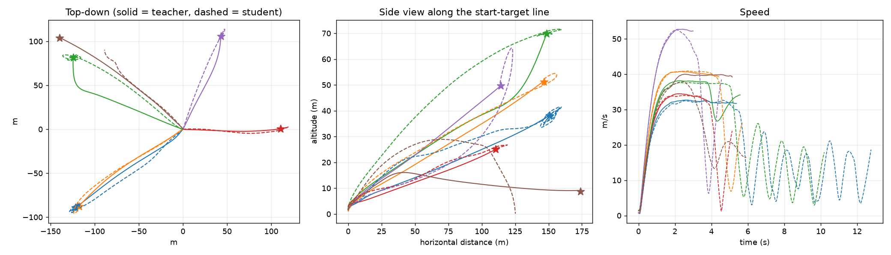
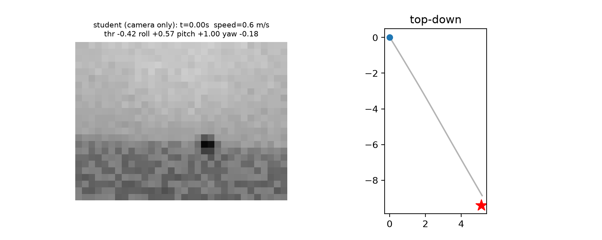
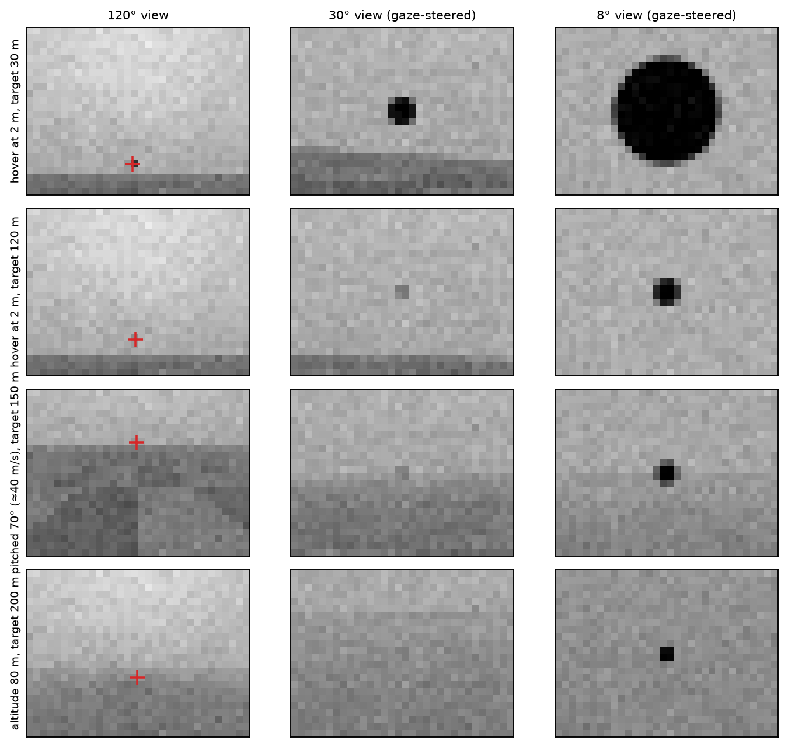

What does a camera-only FPV acro pilot need to learn?
A simulated quadrotor flies to targets 100–200 m away at up to 40 m/s. It commands throttle and roll, pitch and yaw rates, and sees only noisy, delayed 32×24 video, as a human FPV pilot does. It gets no position, velocity or attitude.
Success on 1024 randomised long-range episodes, 15 s limit. Mean ± s.d. over 5 seeds. "+ more DAgger" spends the same compute as RL, as a control.

- Teacher. PPO on the true state with an asymmetric critic. It only learns where the target is once it has seen it.
- Student. A CNN with an optional GRU over a 120° view and two gaze-steered 30° and 8° views, trained by DAgger on its own flights.
- Fine-tune. Recurrent PPO on the student, with a privileged critic and a decaying imitation anchor.
- 18 randomised parameters per flight: thrust-to-weight, motor lag, 0–40 ms latency each way, camera tilt, wind, gusts, battery sag, ground effect, sensor noise.
- One XLA program on a laptop CPU: 1024 drones in parallel, im2col convolutions about 25× faster inside
lax.scan.
Linear probes read physical quantities straight from the network's features, against a memoryless control and shuffled labels. The current frames already show attitude and body rates. Memory adds velocity, which no single image contains.
There is no sign that the pilot identifies the drone's thrust or lag online. The gain comes from integrating motion over time.


